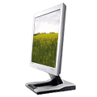

Forside
Introduktion
Valg af
Anvendelse
Motiver

Anvendelse
Hvis man ønsker at udnytte pladsen på sit digitale hukommelseskort optimalt,
så man kan tage flest mulige billeder, er det vigtigt at holde sig for øje,
hvad man skal bruge billedet til.
Det er de færreste, som ønsker at printe alle deres billeder ud, og ofte bliver de fleste billeder fremvist på computeren, eller sendt i E-mails. Således spildes der ofte plads på hukommelseskortet, som kunne bruges til at tage endnu flere billeder, ved at folk gemmer deres billeder i for høj kvalitet.
Grundlæggende er der to forskellige anvendelsesområder for et digitalt billede:
- Digitalt: på web-sider, fremvisning på TV, i E-mails mv.
- Udskrevet: som foto, brevpapir, sange, mv.
Digital opbevaring/fremvisning
Hvis man ønsker at bruge sine digitale billeder på et digitalt medie, som f.eks. en computer, CD, ell. lign. kan man ofte tillade sig at bruge en lavere opløsning end ved billeder man ønsker at udskrive. Når man ser et billede på en computerskærm, er visningen af billedet begrænset af computerens opløsning. Hvis man derfor ønsker at vise sine billeder frem på computeren, vil man altid tilstræbe at bruge den samme opløsning på billedet som på skærmen, da dette giver én mulighed for at spare plads uden et kvalitetstab.
Hvis et billede med en høj opløsning, skal vises med fx en skærm som har en laver opløsning; kan hele billedet ikke være på skærmen samtidigt, dvs. at kun et mindre udsnit af billedet vil være synligt. Skal hele billedet visses på skærmen samtidigt, bliver man nød til at formindske billedet, så det passer med skærmens højde og bredde. Denne formindskelse konvertere billedes opløsning til skærmens opløsning.
Den mest udbredte opløsning for computerskærme i dag er 1024x768, og efter denne 800x600. Dette svarer til billeder på henholdsvis 0,780 Megapixels og 0,48 Megapixels. Hvis vi sammenholder dette med standarden på et kamera i dag, som er godt 3 Megapixels (en opløsning på 2024x1548), fremgår det tydeligt, at kameraret kan levere et meget 'bedre' billede end der egentlig er brug for.
Hvis et billede på 3.2 Megapixels fylder 1000 kb, vil billedet på hhv. 0,78 Megapixels og 0,48 Megapixels fylde 244 kb og 150 kb. Det vil sige at man med fordel kan bruge den lavere opløsning frem for den højeste, for herved at få plads til 6-7 gange så mange billeder. Så tager man et billede med det formål, at gemme det på sin computer eller på en CD, vil en lavere opløsning på billedet være klart at foretrække. Der er også den fordel, hvis man ønsker at sende et billede med en email, fordi billedet fylder mindre, og tager derfor også kortere tid at sende.
« Tilbage | Næste: udskrivning »
Termer brugt på denne side: Digital fremvsining Skærmopløsning Digital fremvsining Skærmopløsning
|
Til top |